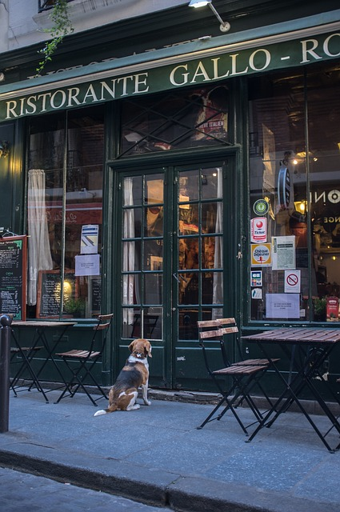

Taniti currently has 10 restaurants: five serve mostly local fish and rice, three serve American-style meals, and two serve Pan-Asian cuisine.
Taniti has two supermarkets, two smaller grocery stores, and one convenience store that is open 24 hours a day.